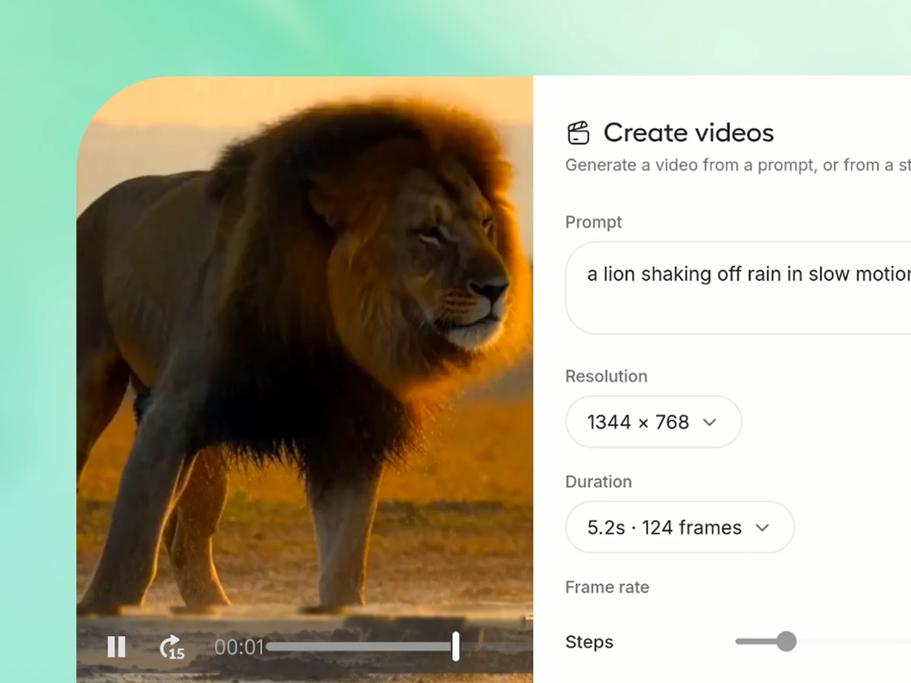
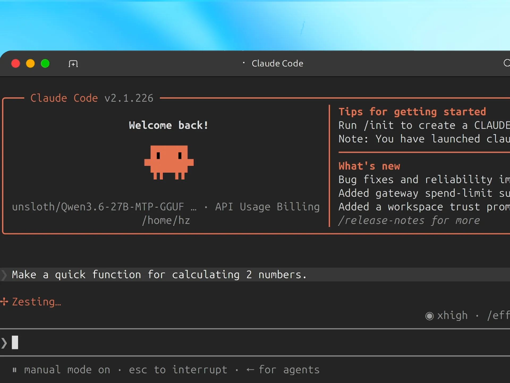
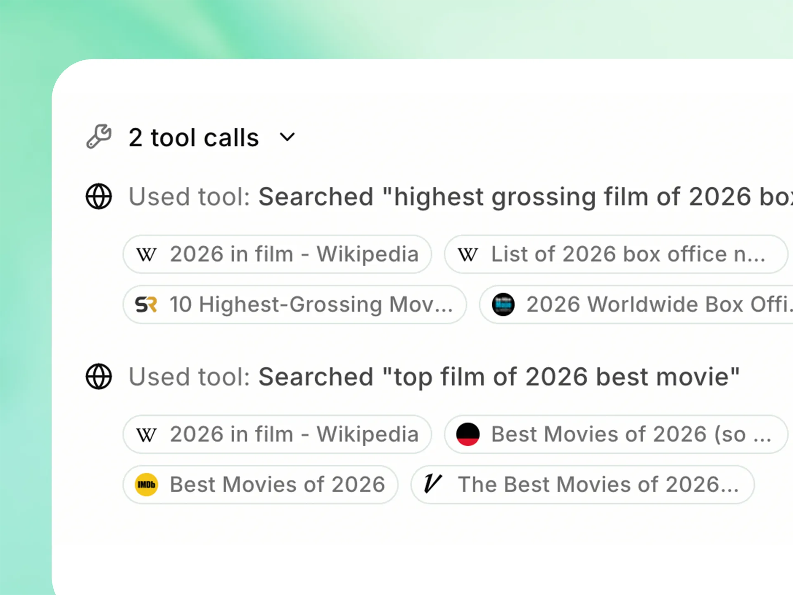
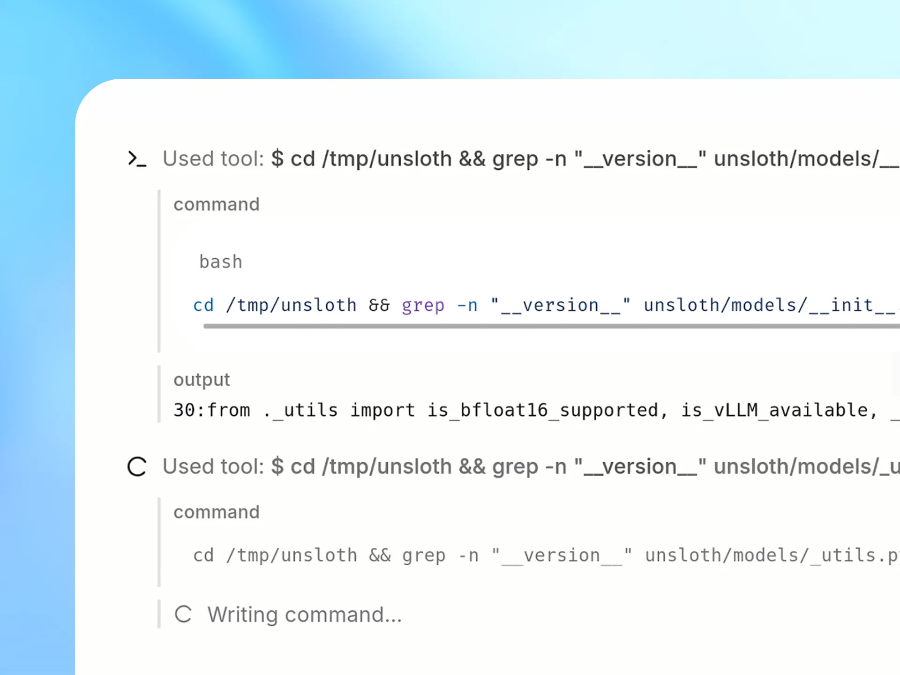
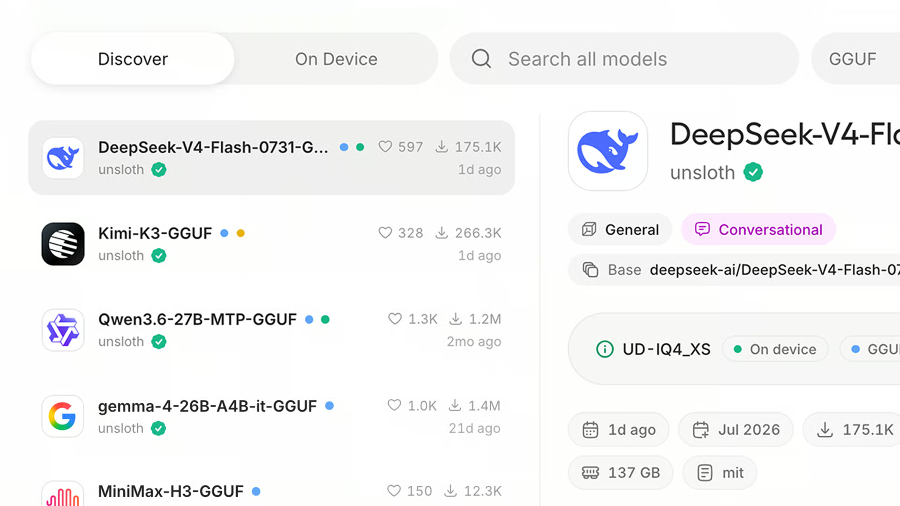
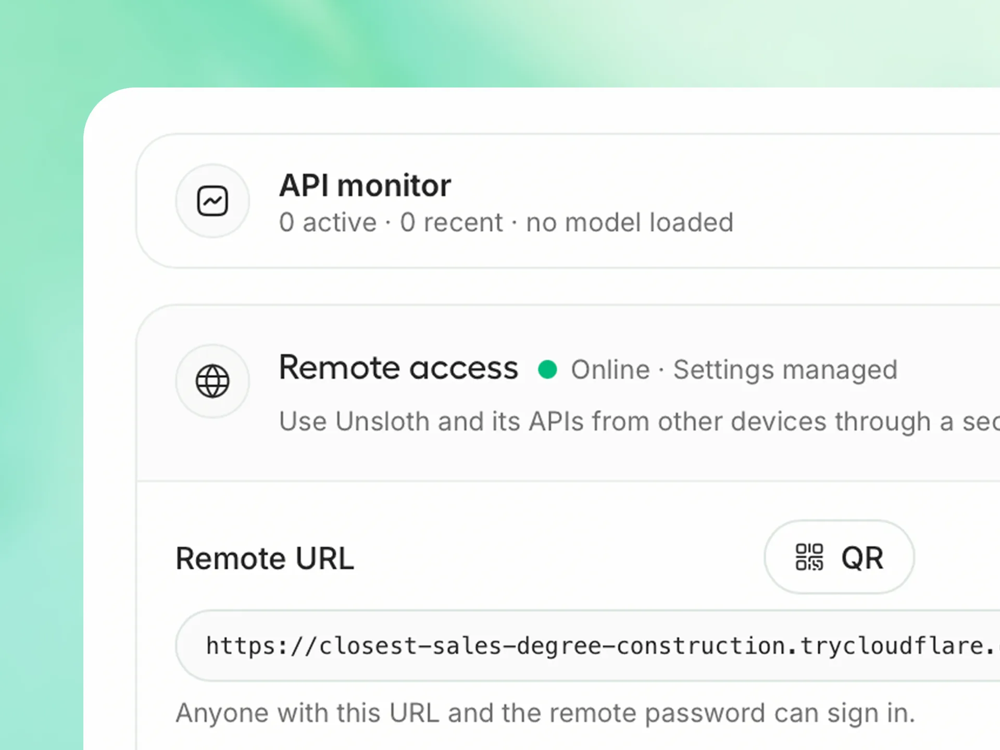

New
Introducing Unsloth Desktop
New
Introducing Unsloth Desktop
The first desktop app to run and train AI models.
Open-source. Free. 100% Local.

Create images with MiniMax-H3, FLUX, Z-Image and LoRA adapters. Generate video with Wan and LTX.
On an NVIDIA B200, MiniMax-H3 produced a 960×544, 124-frame video in 13 seconds at 8 steps, down from 70+.
Transform, inpaint, extend, upscale, reference and edit images locally.


Connect Claude Code, Codex and other agents to local models with the unsloth start command.
Start Unsloth, load a model, open your project folder, then run unsloth start claude. Swap models in Unsloth without changing your agent workflow.
Unsloth also exposes an OpenAI-compatible API, so existing apps, scripts and SDKs can connect to your local models through a familiar interface.
Get unlimited, private, and free web search directly inside Unsloth Desktop.
Search while your model thinks, or use Deep Research to find the best sources and create a detailed report with citations.


Get up to 50% more accurate tool-calling with self-healing tool calls that detect, repair and retry failures automatically.
Execute Bash and Python in a secure sandbox so models can run code, test results and complete real tasks locally.
Run and train nearly every model locally, with Day Zero support for releases like Qwen3.8, NVIDIA, GLM, Gemma and more.
Discover, manage and download the right quantization for your device from the built-in model hub.


Serve local or Colab models over HTTPS through a free Cloudflare tunnel.
Check a run from your phone, laptop, or anywhere else you happen to be.

Aug 14, 2026

Aug 10, 2026

Jul 31, 2026

Jul 28,2026
Unsloth Desktop
Run, train and connect the latest text, image, video and audio models on Mac, Windows and Linux. Free, open-source and built to keep your work local.